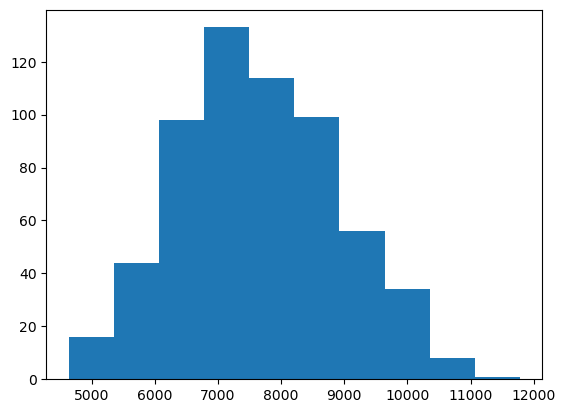
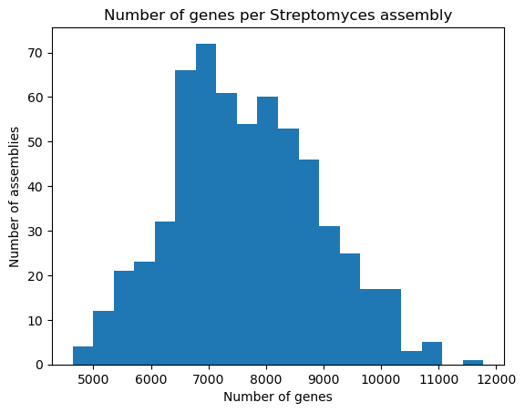
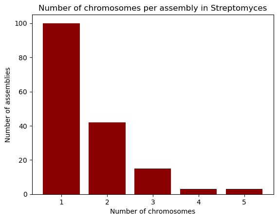
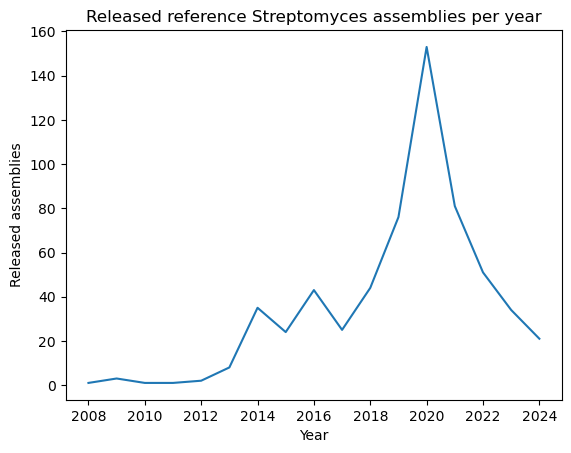
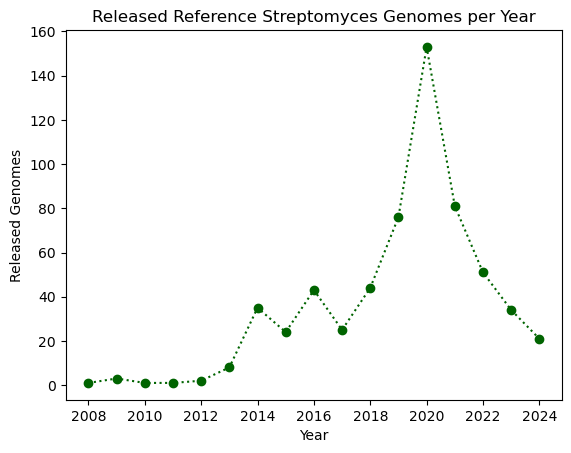
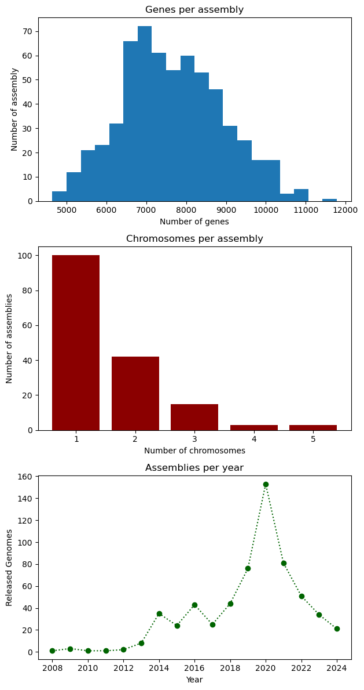

Plotting
Last updated on 2026-02-20 | Edit this page
Overview
Questions
- How do I create plots in Python?
Objectives
- Create basic plots in Python using the Matplotlib library
There are several different Python plotting libraries. Perhaps the most popular one is Matplotlib, initially released back in 2003. Another library, called Seaborn, is based on Matplotlib, and provides “nicer” defaults for colors and plots, making it easier to build beautiful publication-ready plots. A modern alternative is Plotly, that is available not only in Python, but also in R, Julia, JavaScript, MatLab, and F#. This tutorial serves as a brief introduction into Matplotlib.
Introduction to plots: histograms
We’ll use a dataset of reference genomes of Streptomyces. To download it and load it into the Python environment, we can use the Pandas library.
PYTHON
import pandas as pd
data = pd.read_csv("https://raw.githubusercontent.com/carpentries-incubator/pangenomics-python/gh-pages/data/streptomyces.csv")
dataMatplotlib is a large library; however, most plotting functions are
available in the matplotlib.pyplot module, which is usually
imported as follows.
The Matplotlib official website provides a convenient
page showing the main plot types available. We’ll begin with a
histogram showing the number of genes per reference assembly, which can
be accomplished by using the plt.hist function and pass the
"genes" column of the dataset, grouping the values
automatically. Use the plt.show() function to draw the plot
on the screen.

The plt.hist function has many
many options that allow you to customize how the chart looks like.
For instance, we can use the bins parameter to set the
number of bars in the histogram. Furthermore, plots are useless without
proper labels, so we’ll use the plt.xlabel,
plt.ylabel and plt.title functions to define
the label for the x axis, the label for the y axis, and the title for
the plot, respectively.
PYTHON
plt.hist(data["genes"], bins=20)
plt.xlabel("Number of genes")
plt.ylabel("Number of assemblies")
plt.title("Number of genes per Streptomyces assembly")
plt.show()
Bars and lines
Whereas plt.hist allows you to pass the variables
directly, other plot types require you to perform some manipulations on
the dataset, because we should explicitly provide both the x and y axes.
The plt.bar function, as its name suggests, creates
bar plots; we’ll use it to visualize the number of chromosomes per
assembly in our dataset. First, we take the "chromosomes"
column from the dataset, and use the .value_counts() method
to count how many times each chromosome count appears in it. This method
returns a Pandas Series, with an index and
values which we can access. So, in order to build the bar
plot, we first provide the unique chromosome counts for the x axis, and
the values for the y axis. We’ll also change the bar colors to dark red
and add labels.
OUTPUT
chromosomes
1.0 100
2.0 42
3.0 15
4.0 3
5.0 3
Name: count, dtype: int64PYTHON
plt.bar(chromosomes.index, chromosomes.values, color="darkred")
plt.xlabel("Number of chromosomes")
plt.ylabel("Number of assemblies")
plt.title("Number of chromosomes per assembly in Streptomyces")
plt.show()
Going horizontal: creating horizontal bar plots
If you wish to use a horizontal bar plot instead of a vertical one,
use the plt.barh function. Don’t forget to change your
labels accordingly!
Let’s now learn how to build line plots using plt.plot
by visualizing the number of reference assemblies released by year.
Similar to the previous example, we’ll use the
.value_counts method on the "release_year"
columns to count the number of assemblies per year; however, this method
sorts the index by the count, so in order to keep the original order
(which is already chronological), we pass the sort=False
parameter. Next, we provide the index and values for the x and y axes of
our plot.
OUTPUT
release_year
2008 1
2009 3
2010 1
2011 1
2012 2
2013 8
2014 35
2015 24
2016 43
2017 25
2018 44
2019 76
2020 153
2021 81
2022 51
2023 34
2024 21
Name: count, dtype: int64PYTHON
plt.plot(genomes_year.index, genomes_year.values)
plt.xlabel("Year")
plt.ylabel("Released assemblies")
plt.title("Released reference Streptomyces assemblies per year")
plt.show()
A nice feature about plt.plot is that we can change the
way the line looks like, either by modifying the edges and/or the
vertices. You can find the format guide in the “Format Strings” section
of the function’s
documentation. Some example strings you can use are depicted in the
next code block.
PYTHON
"--" # Dashed line
":" # Dotted line
"o" # Large dots only
"v" # Down-facing triangles only
"s" # Squares only
"--o" # Dashed line with large dots
":s" # Dotted line with squaresLet’s modify our plot by making it dotted with large dots, with a dark green color.
PYTHON
plt.plot(genomes_year.index, genomes_year.values, ':o', color="darkgreen")
plt.xlabel("Year")
plt.ylabel("Released Genomes")
plt.title("Released Reference Streptomyces Genomes per Year")
plt.show()
Exercise (Beginner): Plotting with Matplotlib
Complete the following code block to create a horizontal bar plot with the number of assemblies with conclusive and inconclusive taxonomy from the dataset. Use purple to color the bars.
Multiple plots in a single figure
The plt.subplots(x, y)
function creates a multi-plot figure with x rows and
y columns. It returns a Figure object that
allows to modify general aspects of the figure, and an empty array which
will store the plots and are accessible via indices. As an example,
we’ll create a figure with one column and three rows and place the three
plots be made in the lesson. Instead of using .xlabel,
.ylabel and .title, we use
.set_xlabel, .set_ylabel and
.set_title, respectively. At the end, we use the
set_figheight method to set the height for the entire
figure, and the .tight_layout method on the figure in order
to ensure that everything fits in properly.
PYTHON
# Figure initialization
fig, ax = plt.subplots(3)
# First plot: histogram
ax[0].hist(data["genes"], bins=20)
ax[0].set_xlabel("Number of genes")
ax[0].set_ylabel("Number of assembly")
ax[0].set_title("Genes per assembly")
# Second plot: bar
ax[1].bar(chromosomes.index, chromosomes.values, color="darkred")
ax[1].set_xlabel("Number of chromosomes")
ax[1].set_ylabel("Number of assemblies")
ax[1].set_title("Chromosomes per assembly")
# Third plot: line
ax[2].plot(genomes_year.index, genomes_year.values, ':o', color="darkgreen")
ax[2].set_xlabel("Year")
ax[2].set_ylabel("Released Genomes")
ax[2].set_title("Assemblies per year")
# Figure configuration
fig.set_figheight(12)
fig.tight_layout()
plt.show()
- Matplotlib is a popular plotting library for Python